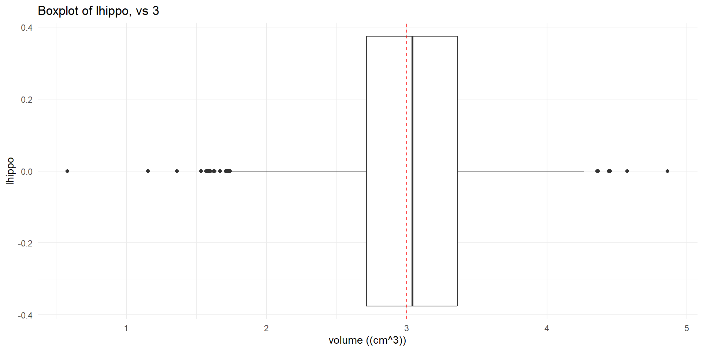
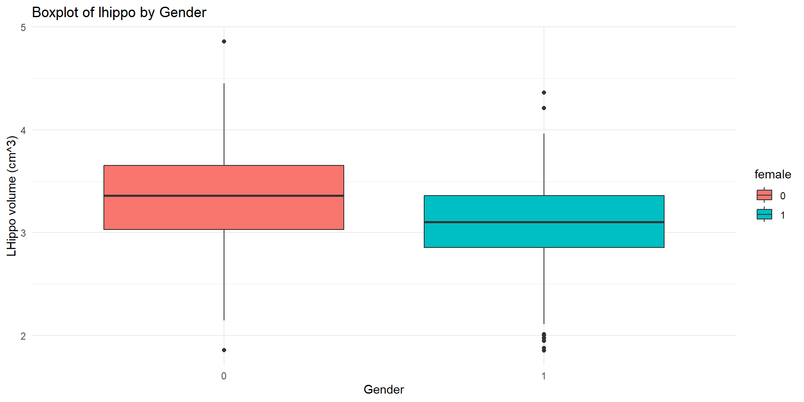
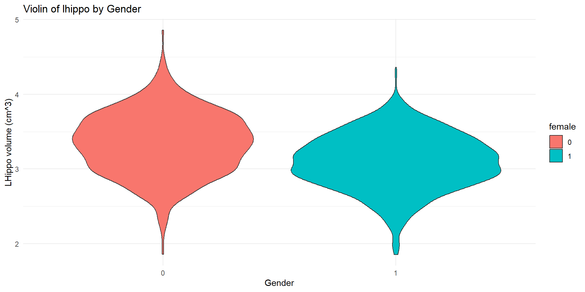
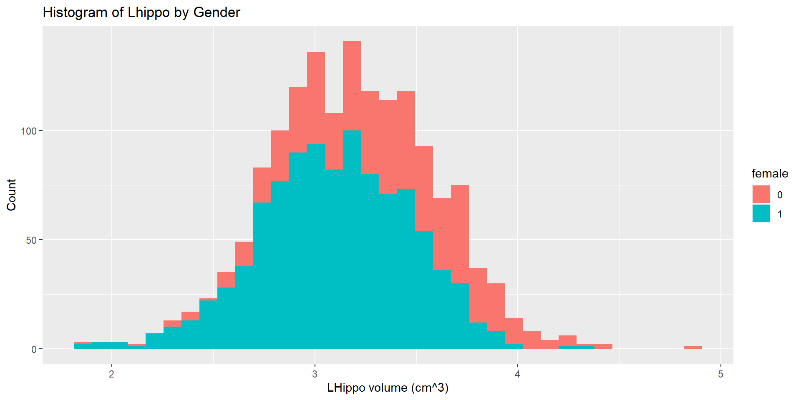
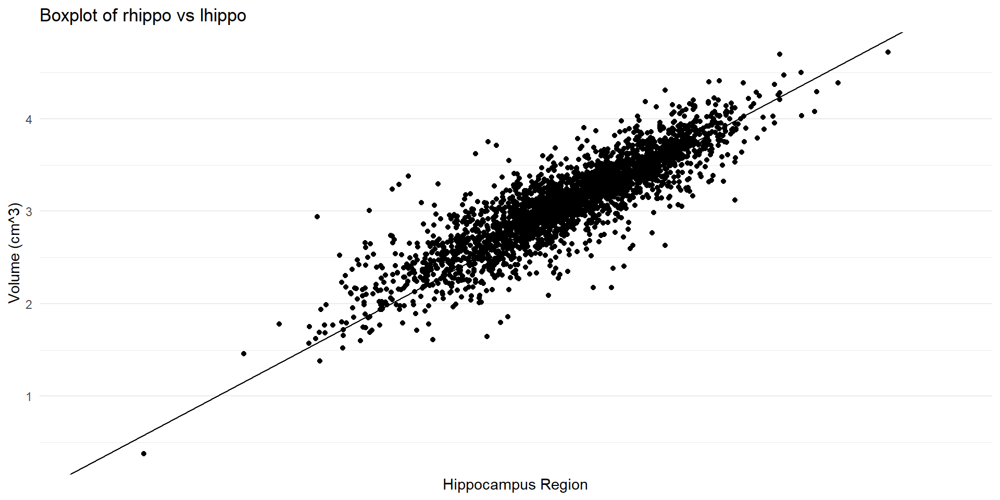
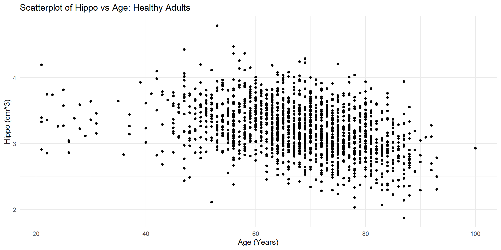
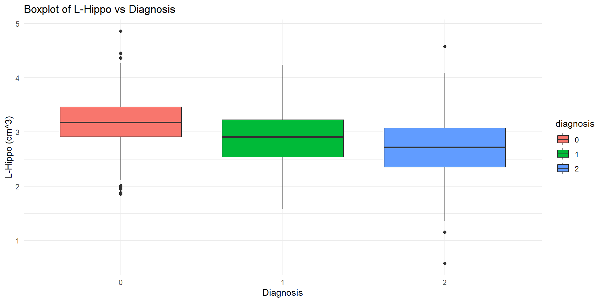
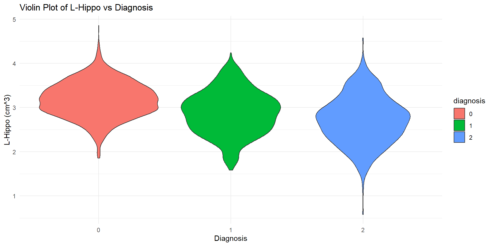
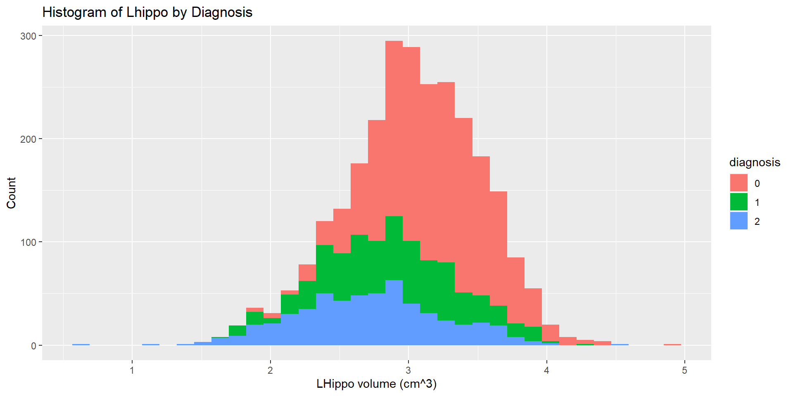

Day 4: Hypothesis Testing - Code Only & Visualizations
2024-07-14
Load libraries
Read Data
Code
alzheimer_data <- read.csv('data/alzheimer_data.csv') %>%
select(id, diagnosis, age, educ, female, height, weight, lhippo, rhippo) %>%
mutate(diagnosis = as.factor(diagnosis),
female = as.factor(female))
alzheimer_healthy <- read.csv('data/alzheimer_data.csv') %>%
select(id, diagnosis, age, educ, female, height, weight, lhippo, rhippo) %>%
mutate(diagnosis = as.factor(diagnosis),
female = as.factor(female)) %>%
filter(diagnosis==0)Recall:
- Is the mean left hippocampus volume of healthy adults \(3cm^3\)?
- Is the proportion of healthy adults with a > \[3cm^3\] right hippocampus volume 50%?
- Do healthy men and women [gender] have the same mean left hippocampus volume?
- Is a human’s left hippocampus volume the same as the right hippocampus volume?
Recall:
- Is having a greater right vs left hippocampus associated with gender?
- Is hippocampus volume correlated with age in healthy adults?
- Does left hippocampus volume differ across diagnosis groups?
Example 1: One Sample t-test
Is the mean left hippocampus volume of healthy adults \(3cm^3\)?
- 1 Numerical Variable: Boxplot/Violin Plot/Histogram
Example 1: visualization – boxplot
Example 1: visualization– violin plot
Code

Example 1: calculate mean
Example 1: Calculate the test statistics
Example 1: Calculate P-value Manually
probability of greater than 17.72495
probability of less than -17.72495
p-value: greater than 17.72495 OR less than -17.72495
Example 1: Use t.test
We don’t have to the calculation manually. We can run a one-sample t-test using t.test
One Sample t-test
data: alzheimer_healthy$lhippo
t = 17.725, df = 1533, p-value < 2.2e-16
alternative hypothesis: true mean is not equal to 3
95 percent confidence interval:
3.161398 3.201565
sample estimates:
mean of x
3.181481 Example 1: Left-Tailed
- Only interested in area below 17.72495
[1] 1
One Sample t-test
data: alzheimer_healthy$lhippo
t = 17.725, df = 1533, p-value = 1
alternative hypothesis: true mean is less than 3
95 percent confidence interval:
-Inf 3.198333
sample estimates:
mean of x
3.181481 EXAMPLE 1: Right- Tailed
- Only interested in area above 17.72495
[1] 2.143984e-64
One Sample t-test
data: alzheimer_healthy$lhippo
t = 17.725, df = 1533, p-value < 2.2e-16
alternative hypothesis: true mean is greater than 3
95 percent confidence interval:
3.16463 Inf
sample estimates:
mean of x
3.181481 Example 2: one-sample proportion z-test
Is the proportion of healthy adults with a > \(3cm^3\) right hippocampus volume 50%?
- Categorical: Table/Barplot
Example 2: Visualization
Example 2: testing
[1] 0.6558018[1] 0.01213048[1] 12.84383Code
[1] 4.657335e-38EXAMPLE 3: Two-Sample t-test
- Do healthy men and women [gender] have the same mean left hippocampus volume?
Categorical (gender) and Numerical (Left Hippocampus) :
Side by Side Boxplot
Side by Side Violin
2 Histograms
Example 3: Visualization – boxplot
Example 3: Visualization – violin
Example 3: Visualization – histogram
Example 3: use t.test
Code
Welch Two Sample t-test
data: alzheimer_healthy$lhippo[alzheimer_healthy$female == 0] and alzheimer_healthy$lhippo[alzheimer_healthy$female == 1]
t = 11.756, df = 971.28, p-value < 2.2e-16
alternative hypothesis: true difference in means is not equal to 0
95 percent confidence interval:
0.2088777 0.2925882
sample estimates:
mean of x mean of y
3.345749 3.095016
Welch Two Sample t-test
data: alzheimer_healthy$lhippo by alzheimer_healthy$female
t = 11.756, df = 971.28, p-value < 2.2e-16
alternative hypothesis: true difference in means between group 0 and group 1 is not equal to 0
95 percent confidence interval:
0.2088777 0.2925882
sample estimates:
mean in group 0 mean in group 1
3.345749 3.095016 Example 4: paired t-test
Is a human’s left hippocampus volume the same as the right hippocampus volume?
- 2 Numerical data:
- Side by side boxplot - side by side violin plot - 2 histograms
Example 4: 2 Group vs Paired Test
Whats the difference:
Before we had Gender vs LHippo, no one gets to have both Female/Male Gender, thus we are splitting Lhippo by gender.
- Comparing some number of men, to some number of women.
Here we have Lhippo and right hippo, every person has both scores [everyone has both sides of their own brain.]
- Comparing everyone’s Lhippo, to everyone’s Rhippo
Example 4: Visualization – boxplots
Code
ggplot(data = alzheimer_data) +
geom_boxplot(aes(x = factor(1), y = rhippo), fill = "blue") +
geom_boxplot(aes(x = factor(2), y = lhippo), fill = "red") +
labs(
title = "Boxplot of rhippo vs lhippo",
x = "Hippocampus Region",
y = "Volume (cm^3)"
) +
scale_x_discrete(labels = c("right", "left")) + # Adjust x-axis labels
theme_minimal()Example 4: Visualization – scatter plot
Example 4: Visualization – histograms
Code
alzheimer_data$hippo.diff=alzheimer_data$rhippo - alzheimer_data$lhippo
ggplot(data = alzheimer_data) +
geom_histogram(aes(x = hippo.diff, fill = "rhippo"), alpha = 0.6, bins = 40) +
geom_vline(xintercept = 0)+
labs(
title = "Histogram of right vs left Hippocampus",
x = "Volume (cm^3)",
y = "Count"
) +
theme_minimal()Example 4: use t.test
Paired t-test
data: alzheimer_data$rhippo and alzheimer_data$lhippo
t = 17, df = 2699, p-value < 2.2e-16
alternative hypothesis: true mean difference is not equal to 0
95 percent confidence interval:
0.07008463 0.08836085
sample estimates:
mean difference
0.07922274
One Sample t-test
data: alzheimer_data$rhippo - alzheimer_data$lhippo
t = 17, df = 2699, p-value < 2.2e-16
alternative hypothesis: true mean is not equal to 0
95 percent confidence interval:
0.07008463 0.08836085
sample estimates:
mean of x
0.07922274 Example 5: chi-squared test
Is having a greater right vs left hippocampus associated with gender?
- 2 Categorical: table, barplot
Example 5: visualization
Code
Left Bigger Right Bigger
Male 0.1514815 0.2748148
Female 0.2029630 0.3707407Example 5: use chisq.test
0 1
FALSE 409 548
TRUE 742 1001
Pearson's Chi-squared test with Yates' continuity correction
data: table(alzheimer_data$rhippo > alzheimer_data$lhippo, alzheimer_data$female)
X-squared = 0.0018904, df = 1, p-value = 0.9653Example 6: Correlation
- Is hippocampus volume [average] correlated with age in healthy adults?
- 2 Numerical: Dot Plot, histogram, boxplot
- Since we are interested in correlation [linear] we will want to plot them in a scatter plot cloud.
- 2 Numerical: Dot Plot, histogram, boxplot
Example 6: Visualization
Code

Code

Discussion: is there a linear trend? are there regions of concerns?
Example 6: cor.test
Pearson's product-moment correlation
data: alzheimer_healthy$age and alzheimer_healthy$hippo
t = -15.125, df = 1532, p-value < 2.2e-16
alternative hypothesis: true correlation is not equal to 0
95 percent confidence interval:
-0.4032192 -0.3160971
sample estimates:
cor
-0.360444 Code
Call:
lm(formula = alzheimer_healthy$hippo ~ alzheimer_healthy$age)
Residuals:
Min 1Q Median 3Q Max
-1.28655 -0.24184 -0.00909 0.24685 1.40369
Coefficients:
Estimate Std. Error t value Pr(>|t|)
(Intercept) 4.0031441 0.0528487 75.75 <2e-16 ***
alzheimer_healthy$age -0.0116469 0.0007701 -15.12 <2e-16 ***
---
Signif. codes: 0 '***' 0.001 '**' 0.01 '*' 0.05 '.' 0.1 ' ' 1
Residual standard error: 0.3605 on 1532 degrees of freedom
Multiple R-squared: 0.1299, Adjusted R-squared: 0.1294
F-statistic: 228.8 on 1 and 1532 DF, p-value: < 2.2e-16Example 7: one-way ANOVA
Does left hippocampus volume differ across diagnosis[>2 categories] groups?
Does not look for any specific difference just if there’s any
Numerical [L-hippo] and Categorical [diagnosis]
Size by side boxplot [now 3]
Side by side violin [now 3]
Histogram [now 3]
Example 7: Visualizaiton – Boxplot
Example 7: Visualizaiton – Violin
Example 7: Histogram
Example 7: aov test
Df Sum Sq Mean Sq F value Pr(>F)
alzheimer_data$diagnosis 2 100.5 50.27 247.1 <2e-16 ***
Residuals 2697 548.6 0.20
---
Signif. codes: 0 '***' 0.001 '**' 0.01 '*' 0.05 '.' 0.1 ' ' 1 Df Sum Sq Mean Sq F value Pr(>F)
diagnosis 2 100.5 50.27 247.1 <2e-16 ***
Residuals 2697 548.6 0.20
---
Signif. codes: 0 '***' 0.001 '**' 0.01 '*' 0.05 '.' 0.1 ' ' 1Example 7: aov post-hoc test
Tukey multiple comparisons of means
95% family-wise confidence level
Fit: aov(formula = lhippo ~ diagnosis, data = alzheimer_data)
$diagnosis
diff lwr upr p adj
1-0 -0.2967987 -0.3473345 -0.2462629 0
2-0 -0.4600909 -0.5125489 -0.4076328 0
2-1 -0.1632921 -0.2253194 -0.1012649 0